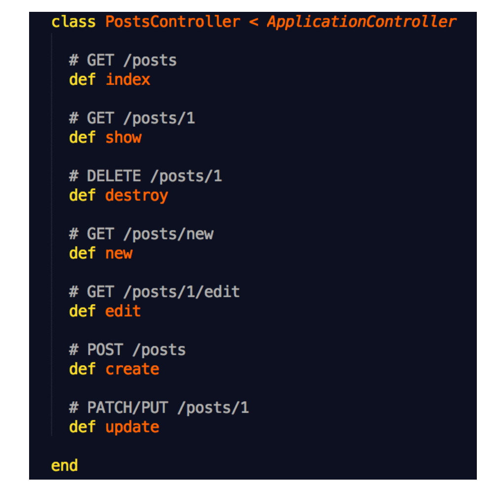
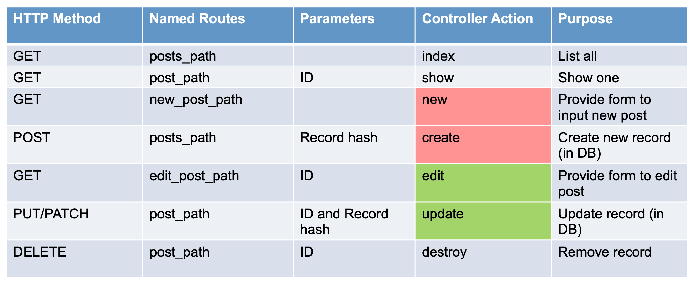

ActionPack is Controller and View work together to let you interact with resources in the Model layer
REST(Representational State Transfer)
REST is all about resources, You should be to able to: 1. List available resources 2. Show a specific resource 3. Destroy an existing resource 4. Provide a way to create a new resource 5. Create a new resource 6. Provide a way to update an existing resource 7. Update an existing resource
REST: A Simple Rails Convention

Rails Convention

Named Routes From
Index
Index action retrieves resources from Data layer. Then, implicitly invokes either HTML or JSON templates.
app/controllers/posts_controller.rb
1 2 3 4 5 6 7 8 9 class PostsController < ApplicationController ... def index @posts = Post.all end ... end
app/views/posts/show.html.erb
1 2 3 4 5 6 7 8 9 10 11 12 13 14 15 16 17 18 19 20 21 22 23 24 25 26 27 28 29 <p id ="notice" > <%= notice %></p > <h1 > Listing Posts</h1 > <table > <thead > <tr > <th > Title</th > <th > Content</th > <th colspan ="3" > </th > </tr > </thead > <tbody > <% @posts.each do |post| %> <tr > <td > <%= post.title %></td > <td > <%= post.content %></td > <td > <%= link_to 'Show', post %></td > <td > <%= link_to 'Edit', edit_post_path(post) %></td > <td > <%= link_to 'Destroy', post, method: :delete, data: { confirm: 'Are you sure?' } %></td > </tr > <% end %> </tbody > </table > <br > <%= link_to 'New Post', new_post_path %>
post = post_path(post)
Destroy 和 Show 的 named route 都是 post, 因此 Destroy 需要指定 method: :delete
Show
Retrieve specific post based on id parameter passed in (as part of URL)
(Implicit) Look for show.html.erb template to render response
app/controllers/posts_controller.rb
1 2 3 4 5 6 7 8 9 10 11 12 13 14 15 16 17 18 19 class PostsController < ApplicationController before_action :set_post , only: [:show , :edit , :update , :destroy ] ... def show end ... private def set_post @post = Post.find(params[:id ]) end end
app/views/posts/show.html.erb
1 2 3 4 5 6 7 8 9 10 11 12 13 14 <p id ="notice" > <%= notice %></p > <p > <strong > Title:</strong > <%= @post.title %> </p > <p > <strong > Content:</strong > <%= @post.content %> </p > <%= link_to 'Edit', edit_post_path(@post) %> | <%= link_to 'Back', posts_path %>
Delete
destroy action destroys a resource and then redirects the browser to another page
1 2 3 4 5 6 7 8 9 10 11 12 13 14 15 16 17 18 19 20 21 22 23 class PostsController < ApplicationController before_action :set_post , only: [:show , :edit , :update , :destroy ] ... def destroy @post .destroy respond_to do |format| format.html { redirect_to posts_url, notice: 'Post was successfully destroyed.' } format.json { head :no_content } end end private def set_post @post = Post.find(params[:id ]) end ...... end
respond_to
Rails helper that specifies how to respond to a request based on a request format
Takes an optional block where the argument is the format
Block specifies how to handle each format:
format.format_name – matching template
format.format_name {do_something_other_than_just_displaying_the_ matching_template}
redirect_to
Instead of rendering a template – send a response to the browser: "Go here!"
New and Create
New
Create a new empty post object
(Implicit) Look for new.html.erb
1 2 3 4 5 6 7 8 9 class PostsController < ApplicationController def new @post = Post.new end end
1 2 3 4 5 <h1 > New Post</h1 > <%= render 'form' %> <%= link_to 'Back', posts_path %>
Create
Create a new post object with parameters that were passed from the new form
Try to save the object to the database
If successful, redirect to show template
If unsuccessful, render new action (template - again)
1 2 3 4 5 6 7 8 9 10 11 12 13 14 15 16 17 18 19 20 21 22 23 24 25 26 27 28 29 30 31 32 class PostsController < ApplicationController ... def create @post = Post.new(post_params) respond_to do |format| if @post .save flash[:success ] = "Welcome to the Sample App!" format.html { redirect_to @post , notice: 'Post was successfully created.' } format.json { render :show , status: :created , location: @post } else format.html { render :new } format.json { render json: @post .errors, status: :unprocessable_entity } end end end private def post_params params.require (:post ).permit(:title , :content ) end ... end
Strong parameters
With strong parameters, Action Controller parameters are forbidden to be used in Active Model mass assigments until they have been whitelisted.
Flash
a hash where the data you put in persists for exactly ONE request AFTER the current request.
Two very common attributes are :notice (good) and :alert (bad)
These are so common in fact, that the redirect_to takes a :notice or :alert keys
1 flash[:attribute ] = value
1 2 3 <% flash.each do |message_type, message| %> <div class ="alert alert-<%= message_type %>" > <%= message %></div > <% end %>
Edit and Update
Edit
Retrieve a post object based on the id provided (as part of the URl)
(Implicit) Look for edit.html.erb
1 2 3 4 5 6 7 8 9 10 11 12 13 14 15 16 17 18 19 class PostsController < ApplicationController before_action :set_post , only: [:show , :edit , :update , :destroy ] ... def edit end private def set_post @post = Post.find(params[:id ]) end ... end
1 2 3 4 5 6 7 <h1 > Editing Post</h1 > <%= render 'form' %> <%= link_to 'Show', @post %> | <%= link_to 'Back', posts_path %>
Update
Retrieve an existing post using id parameter
Update post object with (strong) parameters that were passed from the edit form
Try to (re)save the object to the database
If successful, redirect to show template
If unsuccessful, render edit action (template) again
1 2 3 4 5 6 7 8 9 10 11 12 13 14 15 16 17 18 19 20 21 22 23 24 25 26 27 28 29 30 31 32 33 class PostsController < ApplicationController before_action :set_post , only: [:show , :edit , :update , :destroy ] ... def update respond_to do |format| if @post .update(post_params) format.html { redirect_to @post , notice: 'Post was successfully updated.' } format.json { render :show , status: :ok , location: @post } else format.html { render :edit } format.json { render json: @post .errors, status: :unprocessable_entity } end end end private def set_post @post = Post.find(params[:id ]) end def post_params params.require (:post ).permit(:title , :content ) end ... end